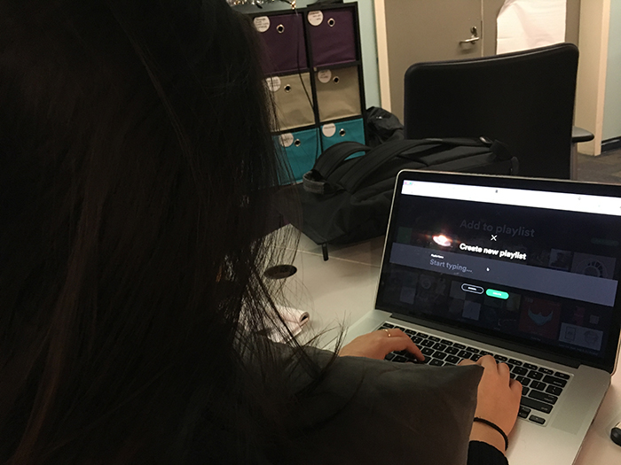
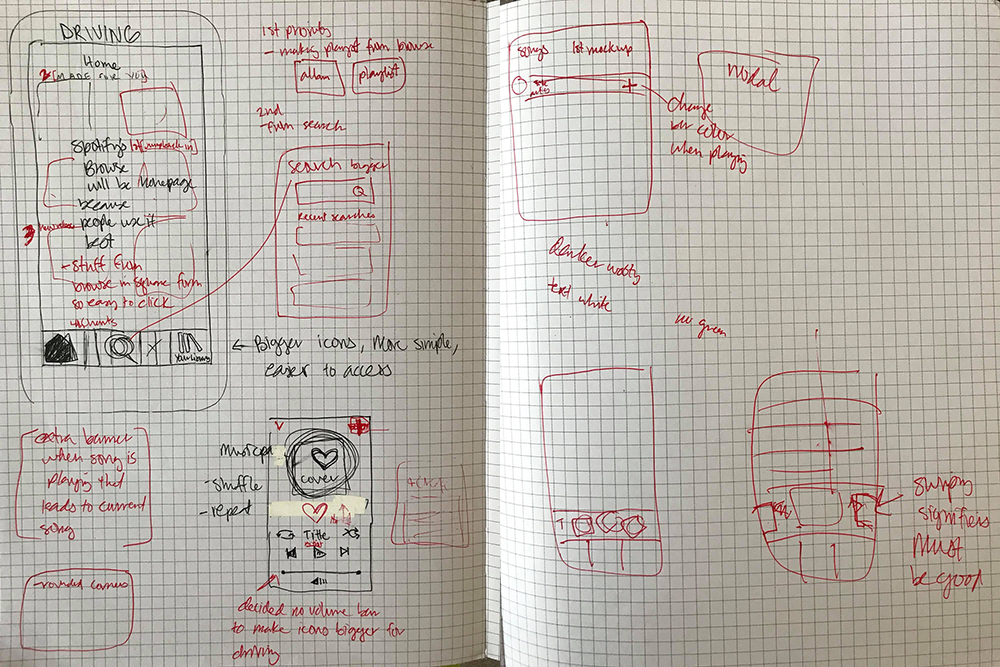
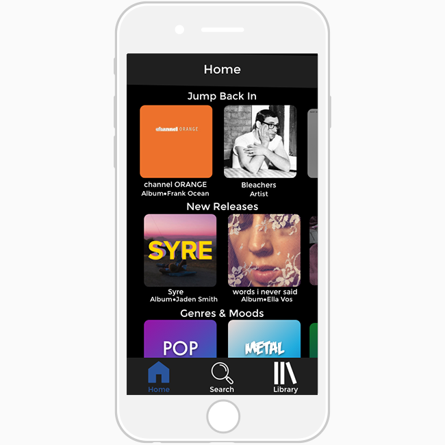
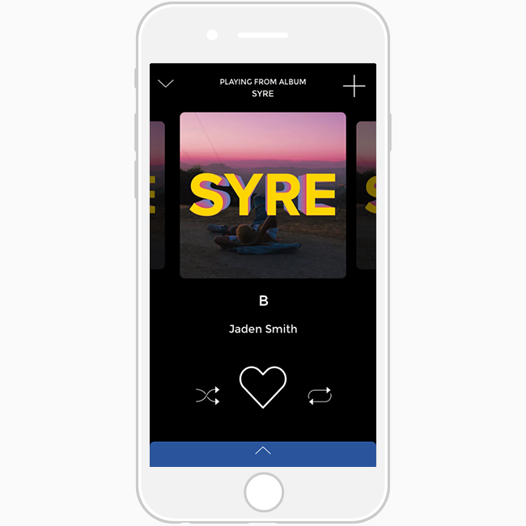

Summary
Our group of four human-computer interaction students was tasked with redesigning a music app from the ground up, starting with interviews that we would use to develop user scenarios. From there, we compared three major music apps and followed-up with an in-depth comparitive analysis of those three music apps' information architecture. This all culminated into our final prototype.
User Research
Our sample consisted of 9 college students aged between 18 and 22. We were looking to find out why people chose their app of choice, when they use it, and how they utilize specific features, particularly creating and managing playlists.
We found that a majority of our sample used Spotify, followed by Apple Music, and then SoundCloud. Almost all of our sample described creating playlists as a process that took getting used to, but have become professionals over time. The main reasons they made playlists was for car rides and parties. The most significant finding was the overwhelming amount of responses stating that the most music-listening occurs in the car. This sprouted our goal. Everyone knows that it is illegal to drive and use your phone, yet, people still do it. If people are going to do it anyways, we should find ways to maximize their safety.
Spotify vs. Apple Music vs. SoundCloud
Our user interviews gave us insights into some of the features these three music apps possess, and even some personal preferences our users had. We compared multiple functions, including creating and managing playlists. We narrowed creating playlists down to three user paths: creating playlists from the menu, from the current song playing, and from your music library. Each app had advantages over the others in certain aspects. For example, creating a playlist from the playlist menu on Apple Music is much less ambiguous than creating a playlist from the menu on Spotify. Apple Music is very blunt with it's creation functions, clearly stating "New Playlist..." on the button itself, while Spotify requires an ambiguous "Edit" function prior to the actual creation.
Small interruptions like this in user flow were things we made sure to keep in mind when developing our playlist creation functions. After our 9 scenario comparisons, we found that Spotify and Apple Music are very similar in many aspects. They deliberately try not to stray too far from the norms in an effort to maintain a good mental model. Meanwhile, SoundCloud contains several innovative functions that are unclear at first, but cater to the expert user. With these ideas in mind, we scoped our design goal to be innovative, yet, intuitive. If you want to read more into our comparisons, you can see them here.
Information Architecture
Next, we dove into the differing information architectures of each app. We found numerous similarities, such as the static navbar, the curated playlists, genres, and search functions. Choices expand each time you dive deeper into the architecture. At the first level, there are the most popular choices, and as you move to the second and third level, selections begin to get more specific, branching into specific genres. This really helped us discover what other apps thought were the most important functions, things that could be reached within a few clicks. We took this into consideration when designing our prototype. Below is a gallery describing the infromation architecture levels of the three apps.

Sketches
With the data from our research and interviews in mind, we decided to start drawing some rough sketches of what our app should look like. We really wanted to make an easy-to-use music app for drivers, so we progressed with an emphasis on usability without visual feedback. We began by thinking about the functions each page absolutely needed, and then figured out how to organize them. We initially placed buttons in familiar spots that other apps use, and then we attempted to move them around and see if there were other places that made more sense. We wanted to make icons bigger so that drivers could easily locate them without precision. This led to many issues regarding the number of functions and the availability of space. We made some decisions to push some functions down another level in the architecture, only keeping the functions that were absolutely necessary at each level. What we came up with was a distinct, sleek app that functions naturally.
Our Final Design
We came up with a design that would cater to drivers by being simplistic and easy-to-use without relying on visual feedback. I was tasked with prototyping the actions required to manage a playlist, including adding and deleting songs, renaming, and changing the playlist's photo. Below is a gallery of the wireframes I created. If you want to see them in action, here's a link to my Invision Project.


{kind=link}
{kind=link}
{kind=link}
{kind=link}
{kind=link}
In order to make the app easier to use, we increased the size of buttons and functions to make them easier to hit without being too precise. In turn, we had to limit our first level information architecture to create more space. Some examples of this were creating a navbar with only three options, and really zoning on on features and functions that drivers would use frequently. One instance of this is the "Jump Back In" function. In the cases of driving, it is likely that playing music will be interrupted by pit stops, thus we wanted to give drivers a quick way to continue their playlists.
Another key function was swiping to skip rather than pinpointing where the skip button was. Swiping is a staple function nowadays with phones, but it can be difficult for new users to understand without sufficient signifiers. We attempted to aid this by visually depicting the "next record" lined up next to the current record.
Our last major design decision had to do with modals. The standard for modals is a pop-up in the center of the screen, usually with a progression button and a cancel button. We want our users to be able to exit out of these modals with ease, so we placed them in the top right area, where the user would click in order to have them pop up. We overlaid the cancel ('X') button with the button they pressed to open the modal, making it quick and intuitive to recover from error.

Conclusion
This project was a good combination of my personal interests and my educational background. It gave me a chance to practice my technical user experience skills and apply it to something I am passionate about. It was difficult in the aspect of working as a group and communicating abstract ideas, but it gave me good practice in designing as a team.